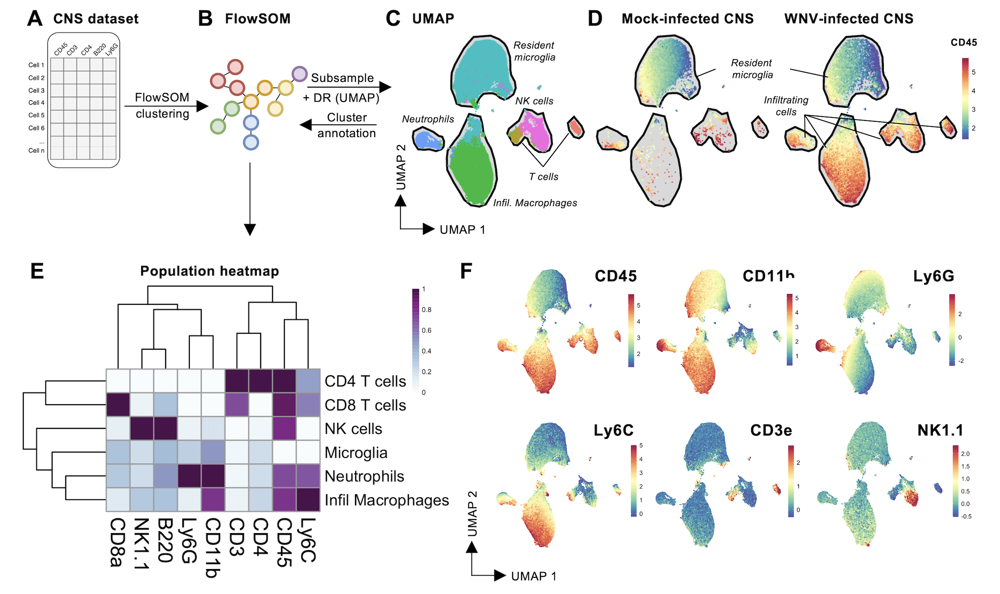
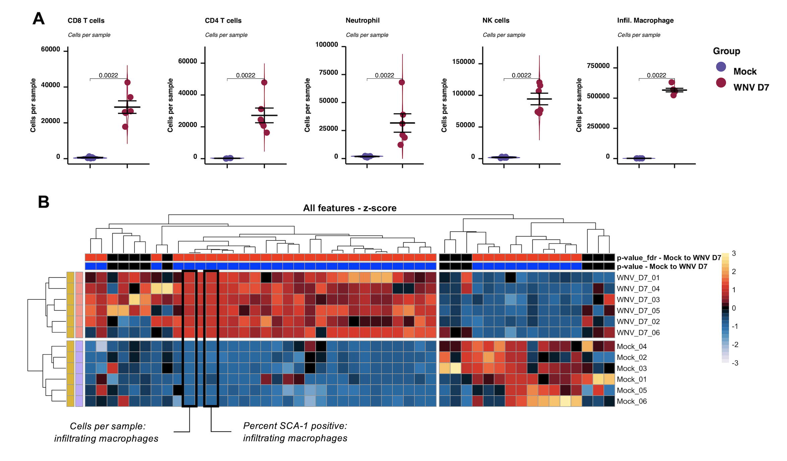
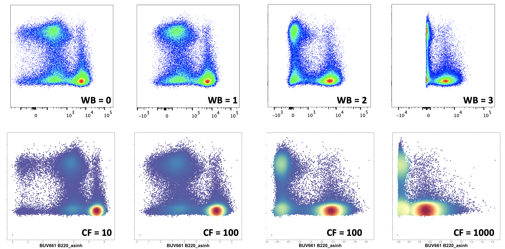
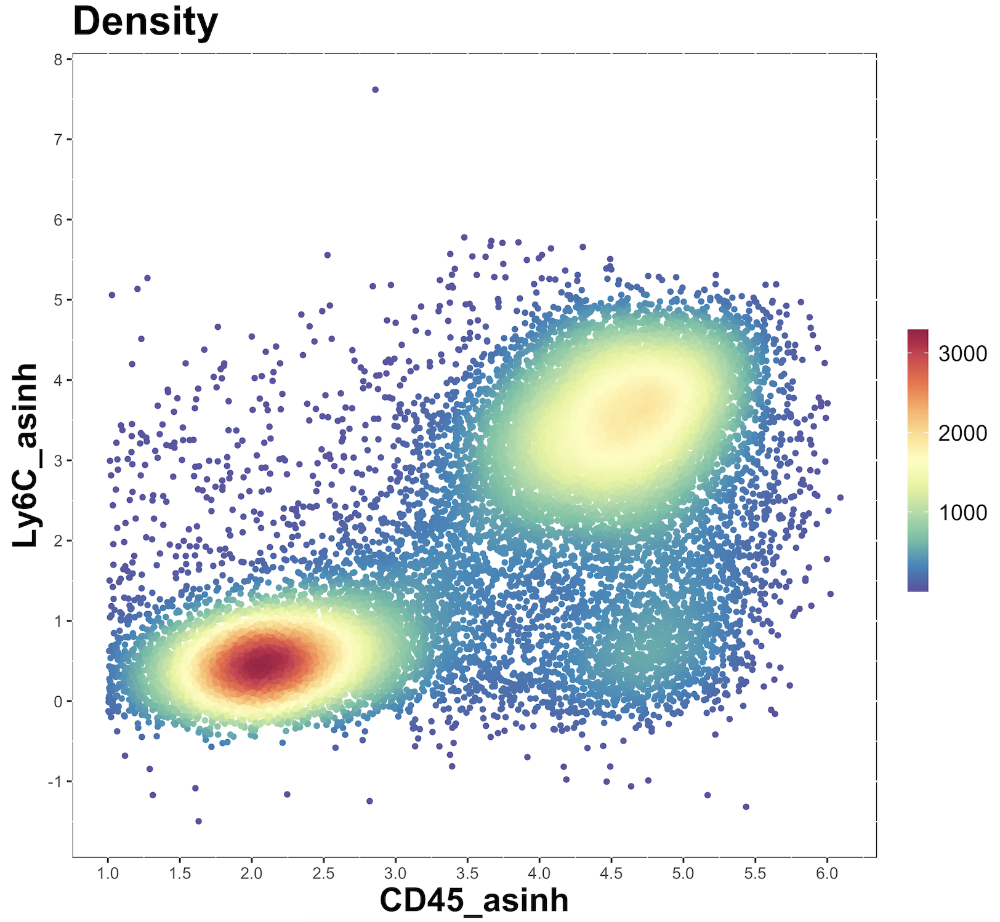
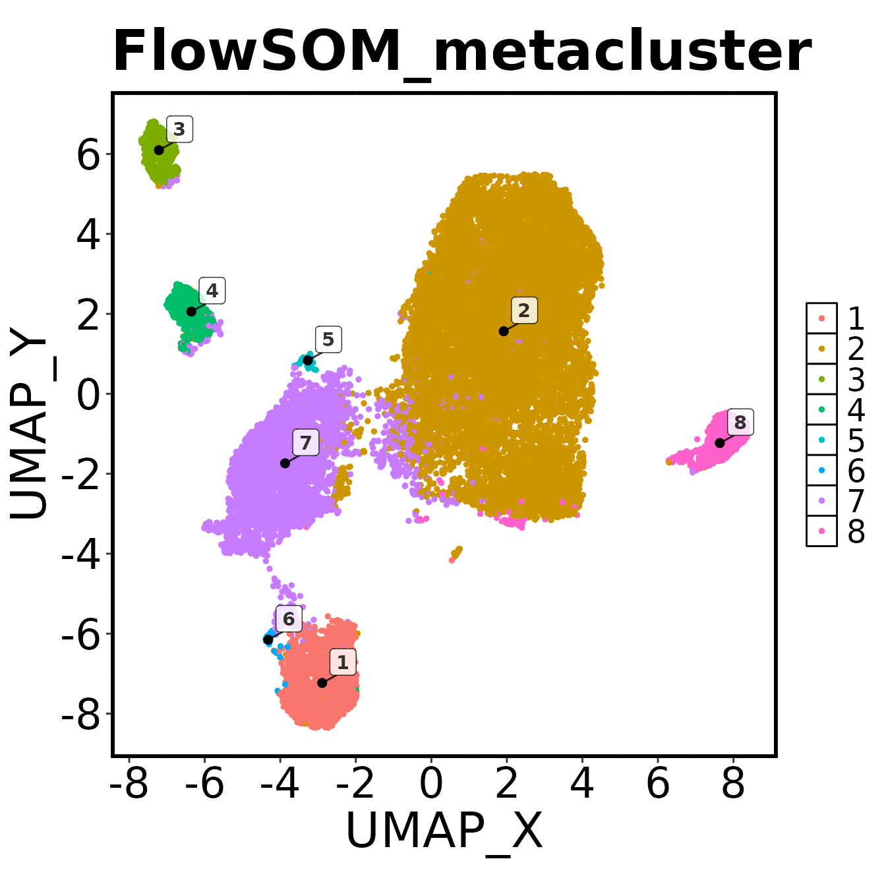
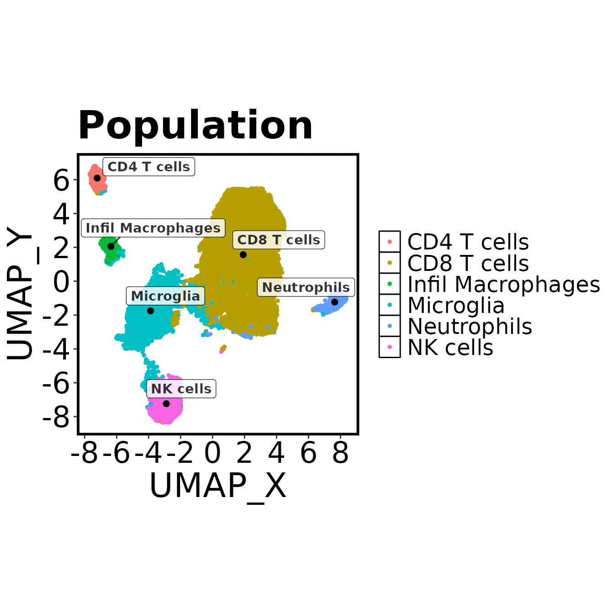
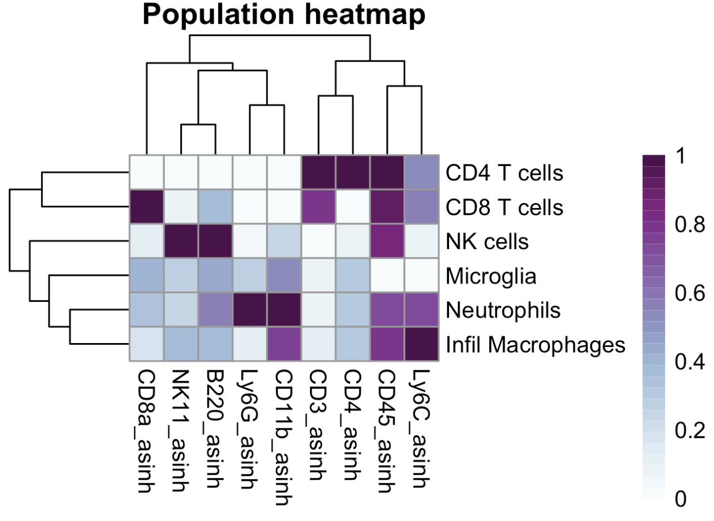
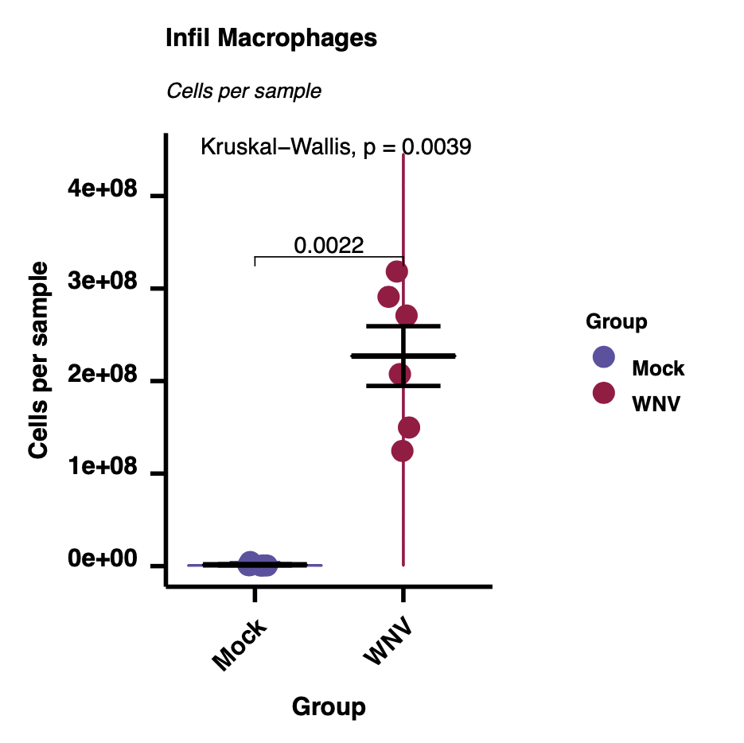
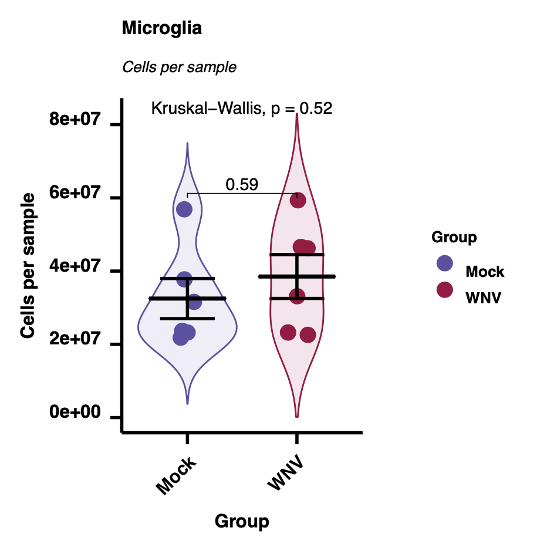
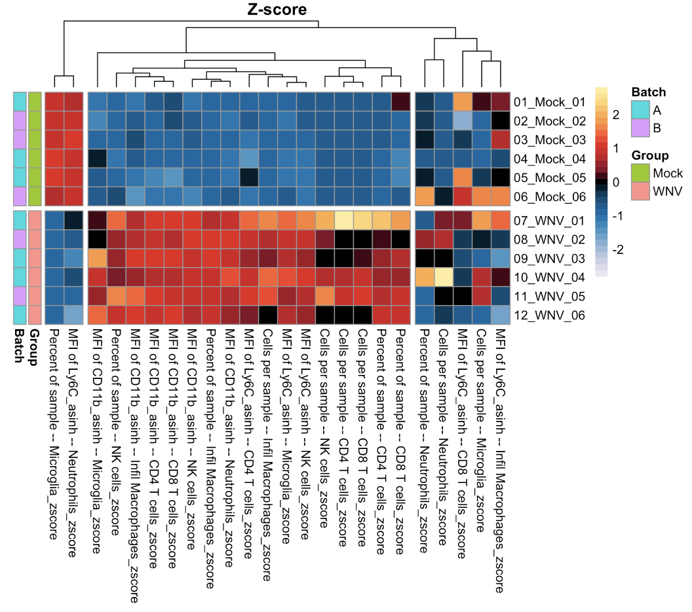

Spectre - simple discovery workflow
Thomas Ashhurst, Givanna Putri
2025-09-19
Source:vignettes/simple_discovery.Rmd
simple_discovery.RmdIntroduction
Overview
Here we provide a worked example of a ‘simple’ discovery analysis workflow, where the entire process (data prep, clustering, dimensionality reduction, cluster annotation, plotting, summary data, and statistical analysis) is contained within a single script. The ‘simple’ workflow is most suitable for fast analysis of small datasets. For larger or more complex datasets, or datasets with multiple batches, we recommend the general discovery workflow, where the data preparation, batch alignment, clustering/dimensionality reduction, and quantitative analysis are separated into separate scripts.
The demo dataset used for this worked example are cells extracted from mock- or virally-infected mouse brains, measured by flow cytometry.
Strategy
The ‘simple’ and ‘general’ discovery workflows are designed to facilitate the analysis of large and complex cytometry datasets using the Spectre R package. We’ve tested up to 30 million cells in a single analysis session so far. The workflow is designed to get around the cell number limitations of tSNE/UMAP. The analysis starts with clustering with FlowSOM – which is fast and scales well to large datasets. The clustered data is then downsampled, and dimensionality reduction is performed with tSNE/UMAP. This allows for visualisation of the data, and the clusters present in the dataset. Once the possible cell types in the datasets have been explored, the clusters can be labelled with the appropriate cellular identities. Finally, we can use the clusters/populations to generate summary statistics (expression levels, frequencies, total counts etc), which allows us to create graphs and heatmaps, facilitating statistical analysis.
Multiple samples
To analyse multiple samples, all the files must be imported into the one analysis session. This allows cells from each session to be clustered and analysed together, and allows us to examine the differential expression of markers, or the differences in cell proportions, between experimental groups.
Batch alignment
The ‘simple’ discovery workflow does not include any batch alignment steps. If batch correction needs to be applied, we recommend using the general discovery workflow.


Before you start
If you haven’t installed Spectre, please visit our Spectre installation page. If you are new to R and Spectre, we recommend trying out the R/RStudio and Spectre tutorials available on our getting started page, to familiarise yourself with R/RStudio first.
Citation and methods
Citation
If you use Spectre in your work, please consider citing Ashhurst TM, Marsh-Wakefield F, Putri GH et al. (2022). Cytometry Part A 101 (3), 237-253. To continue providing open-source tools such as Spectre, it helps us if we can demonstrate that our efforts are contributing to analysis efforts in the community. Please also consider citing the authors of the individual packages or tools (e.g. CytoNorm, FlowSOM, tSNE, UMAP, etc) that are critical elements of your analysis work. We have provided some generic text that you can use for your methods section with each protocol and on the ‘about’ page.
Sample methods blurb
Here is a sample methods blurb for this workflow. You may need to adapt this text to reflect any changes made in your analysis.
Computational analysis of data was performed using the Spectre R package (Ashhurst et al., 2022), with instructions and source code provided at https://github.com/ImmuneDynamics/spectre. Samples were initially prepared in FlowJo, and the population of interest was exported as raw value CSV files. Arcsinh transformation was performed on the data in R using a co-factor of 15 to redistribute the data on a linear scale and compress low end values near zero. The dataset was then merged into a single data.table, with keywords denoting the sample, group, and other factors added to each row (cell). The FlowSOM algorithm (Van Gassen et al., 2015) was then run on the merged dataset to cluster the data, where every cell is assigned to a specific cluster and metacluster. Subsequently, the data was downsampled and analysed by the dimensionality reduction algorithm Uniform Manifold Approximation and Projection (UMAP) (McInnes, Healy, Melville, 2018) for cellular visualisation.
Setup
Directories
Create a master folder with a meaningful name. Then inside that folder, insert the following:
- One folder called ‘data’ – this will contain your data CSV or FCS files
- One folder called ‘metadata’ – this will contain a CSV containg your sample metadata
- One folder called ‘Spectre simple discovery’ or similar – place this analysis script there
Example:
Analysis script
You can download the simple discovery script from this
link. Place this inside the scripts folder.
Data files
If you would to use the demo data as a test run for the simple discovery workflow, nothing to do at this step. Simply follow the relevant instructions further down this page to download the demo data.
If you would like to use your own data, add your data and metadata files:
- Place the sample CSV or FCS files in the
datafolder you created above. - Place the metadata CSV files in the
metadatafolder you created above.
1. Load packages and set directories
Running library(Spectre) will load the Spectre package
(also known as a ‘library’). We can then use
package.check() to see if the standard dependency packages
are installed, and package.load() to load those
packages.
### Load libraries
library(Spectre)
# Check that all required packages are installed
Spectre::package.check()
# Load required packages
Spectre::package.load()Define a few directories to store data and results.
PrimaryDirectory <- file.path(tempdir(), "spectre_simple_discovery") # For demo purposes, we use a temporary directory
# PrimaryDirectory <- "C:/Path/To/Your/Directory/spectre_simple_discovery" # Uncomment and edit this line to set your own directory
InputDirectory <- file.path(PrimaryDirectory, "data") # Directory containing data files
MetaDirectory <- file.path(PrimaryDirectory, "metadata") # Directory containing metadata files
OutputDirectory <- file.path(PrimaryDirectory, "output") # Directory to save resultsCreate them.
dir.create(PrimaryDirectory, showWarnings = FALSE)
dir.create(InputDirectory, showWarnings = FALSE)
dir.create(MetaDirectory, showWarnings = FALSE)
dir.create(OutputDirectory, showWarnings = FALSE)2. Import and prep data
Demo data
If you need the demo dataset, run the following code in the analysis script (select all, CMD+SHIFT+C) and run to download. If you are using your own datasets, then skip this step. Alternative, download the files from https://github.com/ImmuneDynamics/data/blob/main/msCNS.zip?raw=TRUE.
This code will download the demo dataset files and metadata file, and
place them in the data and metadata folders
respectively.
download.file(
url = "https://github.com/ImmuneDynamics/data/blob/main/msCNS.zip?raw=TRUE",
destfile = file.path(PrimaryDirectory, 'msCNS.zip'),
mode = 'wb'
)
unzip(zipfile = file.path(PrimaryDirectory, 'msCNS.zip'), exdir = PrimaryDirectory)
for(i in list.files(file.path(PrimaryDirectory, 'msCNS', 'data'), full.names = TRUE)){
file.rename(from = i, to = file.path(InputDirectory, basename(i)) )
}
for(i in list.files(file.path(PrimaryDirectory, 'msCNS', 'metadata'), full.names = TRUE)){
file.rename(from = i, to = file.path(MetaDirectory, basename(i)) )
}
unlink(c(file.path(PrimaryDirectory, 'msCNS'), file.path(PrimaryDirectory, 'msCNS.zip')), recursive = TRUE)Import data
To begin, we will change our working directory to ‘InputDirectory’ and list all the CSV files in that directory – these should be the sample CSV files. We can then read in all of our samples (in this example, one CSV file per sample) into a list called ‘data.list’. Spectre uses the data.table framework to store data, which reads, writes, and performs operations on data very quickly.
### Import data
list.files(InputDirectory, ".csv")
#> [1] "CNS_Mock_01.csv" "CNS_Mock_02.csv" "CNS_Mock_03.csv"
#> [4] "CNS_Mock_04.csv" "CNS_Mock_05.csv" "CNS_Mock_06.csv"
#> [7] "CNS_WNV_D7_01.csv" "CNS_WNV_D7_02.csv" "CNS_WNV_D7_03.csv"
#> [10] "CNS_WNV_D7_04.csv" "CNS_WNV_D7_05.csv" "CNS_WNV_D7_06.csv"
data.list <- Spectre::read.files(
file.loc = InputDirectory,
file.type = ".csv",
do.embed.file.names = TRUE
)
#> Reading CSV files...
#> Reading CNS_Mock_01.csv
#> Reading CNS_Mock_02.csv
#> Reading CNS_Mock_03.csv
#> Reading CNS_Mock_04.csv
#> Reading CNS_Mock_05.csv
#> Reading CNS_Mock_06.csv
#> Reading CNS_WNV_D7_01.csv
#> Reading CNS_WNV_D7_02.csv
#> Reading CNS_WNV_D7_03.csv
#> Reading CNS_WNV_D7_04.csv
#> Reading CNS_WNV_D7_05.csv
#> Reading CNS_WNV_D7_06.csvBy default, the read.files() function will generate some
other variables, which you can review, by running the
do.list.summary() function.
The name.table variable is a table of all the column
names for all of your samples (one row per sample, one column per column
name). If all of the column names are matching, then this table should
be a repeating pattern. If it has been jumbled, then some of your
samples have columns that don’t appear in other samples. The
ncol.check and nrow.check are simple tables
indicating the number or columns and rows in each sample.
### Check the data
check <- do.list.summary(data.list)
check$name.table # Review column names and their subsequent values
#> X1 X2 X3 X4 X5 X6 X7 X8 X9 X10 X11
#> 1 NK11 CD3 CD45 Ly6G CD11b B220 CD8a Ly6C CD4 FileName FileNo
#> 2 NK11 CD3 CD45 Ly6G CD11b B220 CD8a Ly6C CD4 FileName FileNo
#> 3 NK11 CD3 CD45 Ly6G CD11b B220 CD8a Ly6C CD4 FileName FileNo
#> 4 NK11 CD3 CD45 Ly6G CD11b B220 CD8a Ly6C CD4 FileName FileNo
#> 5 NK11 CD3 CD45 Ly6G CD11b B220 CD8a Ly6C CD4 FileName FileNo
#> 6 NK11 CD3 CD45 Ly6G CD11b B220 CD8a Ly6C CD4 FileName FileNo
#> 7 NK11 CD3 CD45 Ly6G CD11b B220 CD8a Ly6C CD4 FileName FileNo
#> 8 NK11 CD3 CD45 Ly6G CD11b B220 CD8a Ly6C CD4 FileName FileNo
#> 9 NK11 CD3 CD45 Ly6G CD11b B220 CD8a Ly6C CD4 FileName FileNo
#> 10 NK11 CD3 CD45 Ly6G CD11b B220 CD8a Ly6C CD4 FileName FileNo
#> 11 NK11 CD3 CD45 Ly6G CD11b B220 CD8a Ly6C CD4 FileName FileNo
#> 12 NK11 CD3 CD45 Ly6G CD11b B220 CD8a Ly6C CD4 FileName FileNo
check$ncol.check # Review number of columns (features, markers) in each sample
#> [,1]
#> [1,] 11
#> [2,] 11
#> [3,] 11
#> [4,] 11
#> [5,] 11
#> [6,] 11
#> [7,] 11
#> [8,] 11
#> [9,] 11
#> [10,] 11
#> [11,] 11
#> [12,] 11
check$nrow.check # Review number of rows (cells) in each sample
#> [,1]
#> [1,] 9937
#> [2,] 15415
#> [3,] 14246
#> [4,] 17044
#> [5,] 5459
#> [6,] 4891
#> [7,] 17950
#> [8,] 16233
#> [9,] 15999
#> [10,] 17131
#> [11,] 15926
#> [12,] 18773You can review the first 6 rows of the first sample in your data using the following:
data.list[[1]]
#> NK11 CD3 CD45 Ly6G CD11b B220 CD8a
#> <num> <num> <num> <num> <num> <num> <num>
#> 1: 42.3719 40.098700 6885.08 -344.7830 14787.300 -40.2399 83.71750
#> 2: 42.9586 119.014000 1780.29 -429.6650 5665.730 86.6673 34.72190
#> 3: 59.2366 206.238000 10248.30 -1603.8400 19894.300 427.8310 285.88000
#> 4: 364.9480 -0.233878 3740.04 -815.9800 9509.430 182.4200 333.60500
#> 5: 440.2470 40.035200 9191.38 40.5055 5745.820 -211.6940 149.22000
#> ---
#> 9933: 11.2126 36.951600 2515.82 -647.4930 6172.070 221.9380 266.90000
#> 9934: 239.9700 440.217000 7247.28 -1449.7200 15355.400 809.3040 456.59900
#> 9935: -134.9650 111.350000 2472.85 81.5975 9657.160 -113.1320 3.79607
#> 9936: 86.3333 28.286900 5745.27 -1284.0800 18303.100 353.5290 262.96300
#> 9937: 10.1467 122.255000 1971.69 -215.7660 727.708 506.8580 113.14400
#> Ly6C CD4 FileName FileNo
#> <num> <num> <char> <int>
#> 1: 958.7000 711.072 CNS_Mock_01 1
#> 2: 448.2590 307.272 CNS_Mock_01 1
#> 3: 1008.8300 707.094 CNS_Mock_01 1
#> 4: 440.0710 249.784 CNS_Mock_01 1
#> 5: 87.4815 867.570 CNS_Mock_01 1
#> ---
#> 9933: 141.4200 708.348 CNS_Mock_01 1
#> 9934: 2093.6900 2119.270 CNS_Mock_01 1
#> 9935: -114.1510 110.743 CNS_Mock_01 1
#> 9936: 745.8080 537.750 CNS_Mock_01 1
#> 9937: 244.2210 2334.800 CNS_Mock_01 1Merge data.tables
Once the metadata has been added, we can then merge the data into a single data.table using do.merge.files(). By default, columns with matching names will be aligned in the new table, and any columns that are present in some samples, but not others, will be added and filled with ‘NA’ for any samples that didn’t have that column initially. Once the data has been merged, we can review the data:
### Merge data
cell.dat <- Spectre::do.merge.files(dat = data.list)
cell.dat
#> NK11 CD3 CD45 Ly6G CD11b B220 CD8a
#> <num> <num> <num> <num> <num> <num> <num>
#> 1: 42.3719 40.098700 6885.08 -344.7830 14787.30 -40.2399 83.7175
#> 2: 42.9586 119.014000 1780.29 -429.6650 5665.73 86.6673 34.7219
#> 3: 59.2366 206.238000 10248.30 -1603.8400 19894.30 427.8310 285.8800
#> 4: 364.9480 -0.233878 3740.04 -815.9800 9509.43 182.4200 333.6050
#> 5: 440.2470 40.035200 9191.38 40.5055 5745.82 -211.6940 149.2200
#> ---
#> 169000: 910.8890 72.856100 31466.20 -316.5570 28467.80 -7.7972 -271.8040
#> 169001: -10.2642 64.188700 45188.00 -540.5140 22734.00 202.4110 -936.4920
#> 169002: -184.2910 -9.445650 11842.60 -97.9383 17237.00 123.4760 -219.9320
#> 169003: 248.3860 229.986000 32288.20 -681.1630 19255.80 -656.0540 -201.5880
#> 169004: 738.9810 95.470300 46185.10 -1004.6000 22957.80 -661.6280 72.3356
#> Ly6C CD4 FileName FileNo
#> <num> <num> <char> <int>
#> 1: 958.7000 711.0720 CNS_Mock_01 1
#> 2: 448.2590 307.2720 CNS_Mock_01 1
#> 3: 1008.8300 707.0940 CNS_Mock_01 1
#> 4: 440.0710 249.7840 CNS_Mock_01 1
#> 5: 87.4815 867.5700 CNS_Mock_01 1
#> ---
#> 169000: 12023.7000 1103.0500 CNS_WNV_D7_06 12
#> 169001: 4188.3300 315.9400 CNS_WNV_D7_06 12
#> 169002: 8923.4000 -453.4640 CNS_WNV_D7_06 12
#> 169003: 10365.7000 61.6765 CNS_WNV_D7_06 12
#> 169004: 9704.4700 -31.8532 CNS_WNV_D7_06 12Read in metadata
### Read in metadata
meta.dat <- fread(file.path(MetaDirectory, "sample.details.csv"))
meta.dat
#> Filename Sample Group Batch Cells per sample
#> <char> <char> <char> <char> <num>
#> 1: CNS_Mock_01.csv 01_Mock_01 Mock A 420000
#> 2: CNS_Mock_02.csv 02_Mock_02 Mock B 240000
#> 3: CNS_Mock_03.csv 03_Mock_03 Mock B 256000
#> 4: CNS_Mock_04.csv 04_Mock_04 Mock A 252000
#> 5: CNS_Mock_05.csv 05_Mock_05 Mock A 345000
#> 6: CNS_Mock_06.csv 06_Mock_06 Mock B 702000
#> 7: CNS_WNV_D7_01.csv 07_WNV_01 WNV A 5070000
#> 8: CNS_WNV_D7_02.csv 08_WNV_02 WNV B 2940000
#> 9: CNS_WNV_D7_03.csv 09_WNV_03 WNV A 2120000
#> 10: CNS_WNV_D7_04.csv 10_WNV_04 WNV A 4320000
#> 11: CNS_WNV_D7_05.csv 11_WNV_05 WNV B 4080000
#> 12: CNS_WNV_D7_06.csv 12_WNV_06 WNV A 18300003. Data transformation
Before we perform clustering etc, we need to meaningfully transform the data. For more information on why this is necessary, please see this page.
Note: If you have imported CSV (channel value) files exported from FlowJo, then no data transformations are required, and you can skip all of the arcsinh transformation steps and proceed straight to adding the metadata. More information on the FCS, CSV scale, and CSV channel value file types can be found here.
Create an output directory to store the transformation plots.
plot.path <- file.path(OutputDirectory, "Output 1 - transformed plots")
dir.create(plot.path)First, check the column names of the dataset.
as.matrix(names(cell.dat))
#> [,1]
#> [1,] "NK11"
#> [2,] "CD3"
#> [3,] "CD45"
#> [4,] "Ly6G"
#> [5,] "CD11b"
#> [6,] "B220"
#> [7,] "CD8a"
#> [8,] "Ly6C"
#> [9,] "CD4"
#> [10,] "FileName"
#> [11,] "FileNo"The columns we want to apply arcsinh transformation to are the cellular columns – column 1 to column 9. We can specify those columns using the code below.
### Arcsinh transformation
as.matrix(names(cell.dat))
#> [,1]
#> [1,] "NK11"
#> [2,] "CD3"
#> [3,] "CD45"
#> [4,] "Ly6G"
#> [5,] "CD11b"
#> [6,] "B220"
#> [7,] "CD8a"
#> [8,] "Ly6C"
#> [9,] "CD4"
#> [10,] "FileName"
#> [11,] "FileNo"
to.asinh <- names(cell.dat)[c(1:9)]
to.asinh
#> [1] "NK11" "CD3" "CD45" "Ly6G" "CD11b" "B220" "CD8a" "Ly6C" "CD4"Define the cofactor we will use for transformation. As a general recommendation, we suggest using cofactor = 15 for CyTOF data, and cofactor between 100 and 1000 for flow data (we suggest 500 as a starting point). Here is a quick comparison figure showing how different co-factors compare to bi-exponential transformations performed on an LSR-II. For more detailed information on this choice, and for approaches where different cofactors for different columns might be required, see this page.

In this worked example we will use a cofactor of 500.
cofactor <- 500You can also choose a column to use for plotting the transformed result – ideally something that is expressed on a variety of cell types in your dataset.
plot.against <- "Ly6C_asinh"Now we need to apply arcsinh transformation to the data in those columns, using a specific co-factor.
cell.dat <- do.asinh(cell.dat, to.asinh, cofactor = cofactor)
transformed.cols <- paste0(to.asinh, "_asinh")We can then make some plots to see if the arcsinh transformation is appropriate
for(i in transformed.cols){
make.colour.plot(do.subsample(cell.dat, 20000), i, plot.against, path = plot.path)
}Check the plots and see if you are happy with the transformation. For more detailed guidance, see this page. If happy, then proceed with analysis. Otherwise, go back to the merging of the data.list (to create cell.dat) and try with another co-factor.

4. Add metadata
We also want to read in and attach some sample metadata, to aid with our analysis.
### Add metadata to data.table
meta.dat
#> Filename Sample Group Batch Cells per sample
#> <char> <char> <char> <char> <num>
#> 1: CNS_Mock_01.csv 01_Mock_01 Mock A 420000
#> 2: CNS_Mock_02.csv 02_Mock_02 Mock B 240000
#> 3: CNS_Mock_03.csv 03_Mock_03 Mock B 256000
#> 4: CNS_Mock_04.csv 04_Mock_04 Mock A 252000
#> 5: CNS_Mock_05.csv 05_Mock_05 Mock A 345000
#> 6: CNS_Mock_06.csv 06_Mock_06 Mock B 702000
#> 7: CNS_WNV_D7_01.csv 07_WNV_01 WNV A 5070000
#> 8: CNS_WNV_D7_02.csv 08_WNV_02 WNV B 2940000
#> 9: CNS_WNV_D7_03.csv 09_WNV_03 WNV A 2120000
#> 10: CNS_WNV_D7_04.csv 10_WNV_04 WNV A 4320000
#> 11: CNS_WNV_D7_05.csv 11_WNV_05 WNV B 4080000
#> 12: CNS_WNV_D7_06.csv 12_WNV_06 WNV A 1830000
sample.info <- meta.dat[,c(1:4)]
sample.info
#> Filename Sample Group Batch
#> <char> <char> <char> <char>
#> 1: CNS_Mock_01.csv 01_Mock_01 Mock A
#> 2: CNS_Mock_02.csv 02_Mock_02 Mock B
#> 3: CNS_Mock_03.csv 03_Mock_03 Mock B
#> 4: CNS_Mock_04.csv 04_Mock_04 Mock A
#> 5: CNS_Mock_05.csv 05_Mock_05 Mock A
#> 6: CNS_Mock_06.csv 06_Mock_06 Mock B
#> 7: CNS_WNV_D7_01.csv 07_WNV_01 WNV A
#> 8: CNS_WNV_D7_02.csv 08_WNV_02 WNV B
#> 9: CNS_WNV_D7_03.csv 09_WNV_03 WNV A
#> 10: CNS_WNV_D7_04.csv 10_WNV_04 WNV A
#> 11: CNS_WNV_D7_05.csv 11_WNV_05 WNV B
#> 12: CNS_WNV_D7_06.csv 12_WNV_06 WNV AOnce we have the metadata read into R, we will select only the columns we want to add to our dataset. In this example we only want to include use first four columns (Filename, Sample, Group, and Batch). ‘Filename’ will be used to for matching between cell.dat and meta.dat, and the other three columns will be the information that gets added to cell.dat
meta.dat
#> Filename Sample Group Batch Cells per sample
#> <char> <char> <char> <char> <num>
#> 1: CNS_Mock_01.csv 01_Mock_01 Mock A 420000
#> 2: CNS_Mock_02.csv 02_Mock_02 Mock B 240000
#> 3: CNS_Mock_03.csv 03_Mock_03 Mock B 256000
#> 4: CNS_Mock_04.csv 04_Mock_04 Mock A 252000
#> 5: CNS_Mock_05.csv 05_Mock_05 Mock A 345000
#> 6: CNS_Mock_06.csv 06_Mock_06 Mock B 702000
#> 7: CNS_WNV_D7_01.csv 07_WNV_01 WNV A 5070000
#> 8: CNS_WNV_D7_02.csv 08_WNV_02 WNV B 2940000
#> 9: CNS_WNV_D7_03.csv 09_WNV_03 WNV A 2120000
#> 10: CNS_WNV_D7_04.csv 10_WNV_04 WNV A 4320000
#> 11: CNS_WNV_D7_05.csv 11_WNV_05 WNV B 4080000
#> 12: CNS_WNV_D7_06.csv 12_WNV_06 WNV A 1830000
counts <- meta.dat[,c(2,5)]
counts
#> Sample Cells per sample
#> <char> <num>
#> 1: 01_Mock_01 420000
#> 2: 02_Mock_02 240000
#> 3: 03_Mock_03 256000
#> 4: 04_Mock_04 252000
#> 5: 05_Mock_05 345000
#> 6: 06_Mock_06 702000
#> 7: 07_WNV_01 5070000
#> 8: 08_WNV_02 2940000
#> 9: 09_WNV_03 2120000
#> 10: 10_WNV_04 4320000
#> 11: 11_WNV_05 4080000
#> 12: 12_WNV_06 1830000Now we can add this information to cell.dat. Essentially, the file names are listed in the metadata table, and we can use that to add any listed metadata in the table to the corresponding files in data.list. We can thrn review the data to ensure the metadata has been correctly embedded.
cell.dat <- do.add.cols(cell.dat, "FileName", sample.info, "Filename", rmv.ext = TRUE)
cell.dat
#> NK11 CD3 CD45 Ly6G CD11b B220 CD8a
#> <num> <num> <num> <num> <num> <num> <num>
#> 1: 42.3719 40.098700 6885.08 -344.7830 14787.30 -40.2399 83.7175
#> 2: 42.9586 119.014000 1780.29 -429.6650 5665.73 86.6673 34.7219
#> 3: 59.2366 206.238000 10248.30 -1603.8400 19894.30 427.8310 285.8800
#> 4: 364.9480 -0.233878 3740.04 -815.9800 9509.43 182.4200 333.6050
#> 5: 440.2470 40.035200 9191.38 40.5055 5745.82 -211.6940 149.2200
#> ---
#> 169000: 910.8890 72.856100 31466.20 -316.5570 28467.80 -7.7972 -271.8040
#> 169001: -10.2642 64.188700 45188.00 -540.5140 22734.00 202.4110 -936.4920
#> 169002: -184.2910 -9.445650 11842.60 -97.9383 17237.00 123.4760 -219.9320
#> 169003: 248.3860 229.986000 32288.20 -681.1630 19255.80 -656.0540 -201.5880
#> 169004: 738.9810 95.470300 46185.10 -1004.6000 22957.80 -661.6280 72.3356
#> Ly6C CD4 FileName FileNo NK11_asinh CD3_asinh
#> <num> <num> <fctr> <int> <num> <num>
#> 1: 958.7000 711.0720 CNS_Mock_01 1 0.08464269 0.080111681
#> 2: 448.2590 307.2720 CNS_Mock_01 1 0.08581185 0.235835773
#> 3: 1008.8300 707.0940 CNS_Mock_01 1 0.11819779 0.401593928
#> 4: 440.0710 249.7840 CNS_Mock_01 1 0.67698633 -0.000467756
#> 5: 87.4815 867.5700 CNS_Mock_01 1 0.79429776 0.079985087
#> ---
#> 169000: 12023.7000 1103.0500 CNS_WNV_D7_06 12 1.36096843 0.145201437
#> 169001: 4188.3300 315.9400 CNS_WNV_D7_06 12 -0.02052696 0.128027364
#> 169002: 8923.4000 -453.4640 CNS_WNV_D7_06 12 -0.36070893 -0.018890177
#> 169003: 10365.7000 61.6765 CNS_WNV_D7_06 12 0.47832275 0.445126321
#> 169004: 9704.4700 -31.8532 CNS_WNV_D7_06 12 1.18247624 0.189799003
#> CD45_asinh Ly6G_asinh CD11b_asinh B220_asinh CD8a_asinh Ly6C_asinh
#> <num> <num> <num> <num> <num> <num>
#> 1: 3.316967 -0.64409775 4.080349 -0.08039317 0.16666238 1.4060734
#> 2: 1.982231 -0.77832998 3.122671 0.17247816 0.06938811 0.8062765
#> 3: 3.714001 -1.88215184 4.376885 0.77554551 0.54445897 1.4515055
#> 4: 2.709829 -1.26580137 3.639269 0.35719570 0.62559714 0.7940335
#> 5: 3.605299 0.08092265 3.136655 -0.41166199 0.29417852 0.1740824
#> ---
#> 169000: 4.835271 -0.59701179 4.735145 -0.01559377 -0.51987213 3.8736061
#> 169001: 5.197157 -0.93752450 4.510277 0.39450870 -1.38534526 2.8221404
#> 169002: 3.858443 -0.19464519 4.233563 0.24450841 -0.42678897 3.5757554
#> 169003: 4.861056 -1.11588765 4.344275 -1.08581190 -0.39298254 3.7253778
#> 169004: 5.218981 -1.44774229 4.520071 -1.09255123 0.14417124 3.6595440
#> CD4_asinh Sample Group Batch
#> <num> <char> <char> <char>
#> 1: 1.15078593 01_Mock_01 Mock A
#> 2: 0.58125620 01_Mock_01 Mock A
#> 3: 1.14620108 01_Mock_01 Mock A
#> 4: 0.48082540 01_Mock_01 Mock A
#> 5: 1.31850146 01_Mock_01 Mock A
#> ---
#> 169000: 1.53218180 12_WNV_06 WNV A
#> 169001: 0.59596889 12_WNV_06 WNV A
#> 169002: -0.81400762 12_WNV_06 WNV A
#> 169003: 0.12304230 12_WNV_06 WNV A
#> 169004: -0.06366339 12_WNV_06 WNV ACheck the column names and specify columns that represent cellular features (in this case, the arcsinh transformed data, defined by “markername_asinh”).
### Columns
as.matrix(names(cell.dat))
#> [,1]
#> [1,] "NK11"
#> [2,] "CD3"
#> [3,] "CD45"
#> [4,] "Ly6G"
#> [5,] "CD11b"
#> [6,] "B220"
#> [7,] "CD8a"
#> [8,] "Ly6C"
#> [9,] "CD4"
#> [10,] "FileName"
#> [11,] "FileNo"
#> [12,] "NK11_asinh"
#> [13,] "CD3_asinh"
#> [14,] "CD45_asinh"
#> [15,] "Ly6G_asinh"
#> [16,] "CD11b_asinh"
#> [17,] "B220_asinh"
#> [18,] "CD8a_asinh"
#> [19,] "Ly6C_asinh"
#> [20,] "CD4_asinh"
#> [21,] "Sample"
#> [22,] "Group"
#> [23,] "Batch"
cellular.cols <- names(cell.dat)[c(12:20)]
as.matrix(cellular.cols)
#> [,1]
#> [1,] "NK11_asinh"
#> [2,] "CD3_asinh"
#> [3,] "CD45_asinh"
#> [4,] "Ly6G_asinh"
#> [5,] "CD11b_asinh"
#> [6,] "B220_asinh"
#> [7,] "CD8a_asinh"
#> [8,] "Ly6C_asinh"
#> [9,] "CD4_asinh"Additionally, specify the columns that will be used to generate cluster and tSNE/UMAP results. Columns that are not specified here will still be analysed, but won’t contributed to the generation of clusters. There are a couple of strategies to take here: use all cellular columns for clustering to looks for all possible cell types/states, or use only stably expressed markers to cluster stable phenotypes, which can then be examined for changes in more dynamic markers. For more guidance, see our tutorials page.
as.matrix(names(cell.dat))
#> [,1]
#> [1,] "NK11"
#> [2,] "CD3"
#> [3,] "CD45"
#> [4,] "Ly6G"
#> [5,] "CD11b"
#> [6,] "B220"
#> [7,] "CD8a"
#> [8,] "Ly6C"
#> [9,] "CD4"
#> [10,] "FileName"
#> [11,] "FileNo"
#> [12,] "NK11_asinh"
#> [13,] "CD3_asinh"
#> [14,] "CD45_asinh"
#> [15,] "Ly6G_asinh"
#> [16,] "CD11b_asinh"
#> [17,] "B220_asinh"
#> [18,] "CD8a_asinh"
#> [19,] "Ly6C_asinh"
#> [20,] "CD4_asinh"
#> [21,] "Sample"
#> [22,] "Group"
#> [23,] "Batch"
cluster.cols <- names(cell.dat)[c(12:20)]
as.matrix(cluster.cols)
#> [,1]
#> [1,] "NK11_asinh"
#> [2,] "CD3_asinh"
#> [3,] "CD45_asinh"
#> [4,] "Ly6G_asinh"
#> [5,] "CD11b_asinh"
#> [6,] "B220_asinh"
#> [7,] "CD8a_asinh"
#> [8,] "Ly6C_asinh"
#> [9,] "CD4_asinh"Specify sample, group, and batch columns.
exp.name <- "CNS experiment"
sample.col <- "Sample"
group.col <- "Group"
batch.col <- "Batch"Additionally, we want to specify the downsample targets for dimensionality reduction. This influences how many cells will be shown on a tSNE/UMAP plot, and we are specifying the number of cells per group to downsample to. Check for the number of cells (rows) in each group:
### Subsample targets per group
data.frame(table(cell.dat[[group.col]])) # Check number of cells per sample.
#> Var1 Freq
#> 1 Mock 66992
#> 2 WNV 102012You can then specify the number to downsample to in each group. These must be lower than the total number of cells in each group. In this example we want 2000 cells from ‘mock’ and 20,000 cells from ‘WNV’, to reflect the number of cells present in each group.
First, check the order that the groups appear in the dataset.
unique(cell.dat[[group.col]])
#> [1] "Mock" "WNV"Now you can specify the targets (in the order of
unique(cell.dat[[group.col]]) above).
sub.targets <- c(2000, 20000) # target subsample numbers from each group
sub.targets
#> [1] 2000 200005. Clustering and Dimensionality reduction
Create an output directory to store the clustering and dimensionality reduction plots.
plot.path <- file.path(OutputDirectory, "Output 2 - clustering")
dir.create(plot.path)We can run clustering using the run.flowsom function. In this case we can define the number of desired metaclusters manually, with the meta.k argument (in this case we have chosen 8). This can be increased or decreased as required. Typically, overclustering is preferred, as multiple clusters that represent a single cellular population can always be annotated as such. Subsequently, we can write the clustered dataset to disk.
### Clustering
cell.dat <- run.flowsom(cell.dat, cluster.cols, meta.k = 8)
cell.datWe can then run dimensionality reduction on a subset of the data, allow us to visualise the data and resulting clusters. In this case we have used run.umap, though other options are available, including run.fitsne and run.tsne. As before, this subsampled dataset with DR coordinates is saved to disk.
### Dimensionality reduction
cell.sub <- do.subsample(cell.dat, sub.targets, group.col)
cell.sub
#> NK11 CD3 CD45 Ly6G CD11b B220 CD8a
#> <num> <num> <num> <num> <num> <num> <num>
#> 1: 106.0150 235.13900 13574.70 -179.318 31385.80 -169.4210 -394.6730
#> 2: 132.7940 16.52790 9533.69 -673.468 22061.20 184.8820 282.5120
#> 3: 236.6740 143.33000 7805.94 -605.170 11658.20 658.9580 107.7280
#> 4: 14.8980 -10.63350 3628.48 468.071 12264.60 -178.1110 -194.3480
#> 5: 194.5450 3.62867 3192.66 -515.083 11939.20 -33.5803 42.3089
#> ---
#> 21996: -16.4986 11.00010 24706.30 -263.460 9151.59 -144.2120 -499.9370
#> 21997: 119.8740 92.33010 43645.10 -1130.550 38278.10 -42.0887 -445.5530
#> 21998: 2884.3600 88.01560 88998.60 -4851.610 4889.69 4999.7900 -58.7703
#> 21999: 560.6400 151.51900 55440.80 -2633.550 23937.20 -95.7631 656.6650
#> 22000: 118.9280 331.26200 52654.70 -3161.200 25113.80 -938.5550 155.8260
#> Ly6C CD4 FileName FileNo NK11_asinh CD3_asinh
#> <num> <num> <fctr> <int> <num> <num>
#> 1: 380.647 509.4590 CNS_Mock_05 5 0.21047261 0.454470942
#> 2: 608.245 1095.4700 CNS_Mock_04 4 0.26256084 0.033049783
#> 3: 805.445 1937.4200 CNS_Mock_04 4 0.45724742 0.282872452
#> 4: 126.416 227.9000 CNS_Mock_04 4 0.02979159 -0.021265397
#> 5: 666.571 358.8580 CNS_Mock_02 2 0.37988669 0.007257276
#> ---
#> 21996: 22334.600 59.6839 CNS_WNV_D7_04 10 -0.03299121 0.021998426
#> 21997: 4490.860 727.2510 CNS_WNV_D7_06 12 0.23750870 0.183626518
#> 21998: 1175.860 273.2380 CNS_WNV_D7_01 7 2.45302657 0.175134535
#> 21999: 13667.400 334.3160 CNS_WNV_D7_04 10 0.96458591 0.298581704
#> 22000: 23457.800 2331.7400 CNS_WNV_D7_01 7 0.23566844 0.621694916
#> CD45_asinh Ly6G_asinh CD11b_asinh B220_asinh CD8a_asinh Ly6C_asinh
#> <num> <num> <num> <num> <num> <num>
#> 1: 3.994841 -0.3513617 4.832713 -0.33267180 -0.72432725 0.7021579
#> 2: 3.641813 -1.1067473 4.480243 0.36181778 0.53860285 1.0264871
#> 3: 3.442203 -1.0225758 3.842764 1.08932754 0.21382293 1.2547409
#> 4: 2.679822 0.8354908 3.893427 -0.34908852 -0.37951948 0.2502130
#> 5: 2.553225 -0.9025441 3.866560 -0.06711021 0.08451714 1.0984975
#> ---
#> 21996: 4.593455 -0.5051593 3.600967 -0.28456776 -0.88128449 4.4925567
#> 21997: 5.162418 -1.5546568 5.031215 -0.08407830 -0.80224144 2.8914233
#> 21998: 5.874923 -2.9682497 2.976027 2.99818116 -0.11727162 1.5907079
#> 21999: 5.401630 -2.3635192 4.561837 -0.19037418 1.08655240 4.0016422
#> 22000: 5.350072 -2.5434425 4.609811 -1.38728687 0.30681557 4.5416110
#> CD4_asinh Sample Group Batch FlowSOM_cluster FlowSOM_metacluster
#> <num> <char> <char> <char> <fctr> <fctr>
#> 1: 0.8946876 05_Mock_05 Mock A 190 7
#> 2: 1.5259050 04_Mock_04 Mock A 117 7
#> 3: 2.0639011 04_Mock_04 Mock A 60 7
#> 4: 0.4413331 04_Mock_04 Mock A 184 7
#> 5: 0.6671197 02_Mock_02 Mock B 147 7
#> ---
#> 21996: 0.1190861 10_WNV_04 WNV A 108 2
#> 21997: 1.1692576 12_WNV_06 WNV A 50 2
#> 21998: 0.5223904 07_WNV_01 WNV A 15 1
#> 21999: 0.6267796 10_WNV_04 WNV A 37 2
#> 22000: 2.2442111 07_WNV_01 WNV A 11 2
cell.sub <- run.umap(cell.sub, cluster.cols)
cell.subWe can visualise the DR data to asses which clusters represent cellular populations.
### DR plots
make.colour.plot(
cell.sub,
"UMAP_X",
"UMAP_Y",
"FlowSOM_metacluster",
col.type = 'factor',
add.label = TRUE,
path = plot.path,
)
make.multi.plot(cell.sub, "UMAP_X", "UMAP_Y", cellular.cols, path = plot.path)
We can also generate some multi plots to compare between experimental groups or batches.
make.multi.plot(
cell.sub, "UMAP_X", "UMAP_Y", "FlowSOM_metacluster",
group.col, col.type = 'factor', path = plot.path
)
We can also produce expression heatmaps to help guide our interpretation of cluster identities.
### Expression heatmap
exp <- do.aggregate(cell.dat, cellular.cols, by = "FlowSOM_metacluster")
make.pheatmap(exp, "FlowSOM_metacluster", cellular.cols, path = plot.path)
6. Annotate clusters
Review the cluster labels and marker expression patterns, so you can annotate the clusters. This annotation is optional, as all subsequent steps can be performed on the ‘clusters’ instead of the ‘populations’. Here we can create a list of population names, and then specify which clusters make up that population (e.g. CD4 T cells are contained within cluster ‘3’).
plot.path <- file.path(OutputDirectory, "Output 3 - annotation")
dir.create(plot.path)
### Annotate
annots <- list("CD4 T cells" = c(3),
"CD8 T cells" = c(2),
"NK cells" = c(1),
"Neutrophils" = c(8),
"Infil Macrophages" = c(4),
"Microglia" = c(5,6,7)
)Once the annotation list is created, we can switch the list into a table format to annotate our data.
annots <- do.list.switch(annots)
names(annots) <- c("Values", "Population")
setorderv(annots, 'Values')
annots
#> Values Population
#> <num> <char>
#> 1: 1 NK cells
#> 2: 2 CD8 T cells
#> 3: 3 CD4 T cells
#> 4: 4 Infil Macrophages
#> 5: 5 Microglia
#> 6: 6 Microglia
#> 7: 7 Microglia
#> 8: 8 NeutrophilsUsing the do.add.cols function, we can add the population names to the corresponding clusters.
### Add annotations
cell.dat <- do.add.cols(cell.dat, "FlowSOM_metacluster", annots, "Values")
cell.dat
#> NK11 CD3 CD45 Ly6G CD11b B220 CD8a
#> <num> <num> <num> <num> <num> <num> <num>
#> 1: 42.3719 40.098700 6885.08 -344.7830 14787.30 -40.2399 83.7175
#> 2: 42.9586 119.014000 1780.29 -429.6650 5665.73 86.6673 34.7219
#> 3: 59.2366 206.238000 10248.30 -1603.8400 19894.30 427.8310 285.8800
#> 4: 364.9480 -0.233878 3740.04 -815.9800 9509.43 182.4200 333.6050
#> 5: 440.2470 40.035200 9191.38 40.5055 5745.82 -211.6940 149.2200
#> ---
#> 169000: 910.8890 72.856100 31466.20 -316.5570 28467.80 -7.7972 -271.8040
#> 169001: -10.2642 64.188700 45188.00 -540.5140 22734.00 202.4110 -936.4920
#> 169002: -184.2910 -9.445650 11842.60 -97.9383 17237.00 123.4760 -219.9320
#> 169003: 248.3860 229.986000 32288.20 -681.1630 19255.80 -656.0540 -201.5880
#> 169004: 738.9810 95.470300 46185.10 -1004.6000 22957.80 -661.6280 72.3356
#> Ly6C CD4 FileName FileNo NK11_asinh CD3_asinh
#> <num> <num> <fctr> <int> <num> <num>
#> 1: 958.7000 711.0720 CNS_Mock_01 1 0.08464269 0.080111681
#> 2: 448.2590 307.2720 CNS_Mock_01 1 0.08581185 0.235835773
#> 3: 1008.8300 707.0940 CNS_Mock_01 1 0.11819779 0.401593928
#> 4: 440.0710 249.7840 CNS_Mock_01 1 0.67698633 -0.000467756
#> 5: 87.4815 867.5700 CNS_Mock_01 1 0.79429776 0.079985087
#> ---
#> 169000: 12023.7000 1103.0500 CNS_WNV_D7_06 12 1.36096843 0.145201437
#> 169001: 4188.3300 315.9400 CNS_WNV_D7_06 12 -0.02052696 0.128027364
#> 169002: 8923.4000 -453.4640 CNS_WNV_D7_06 12 -0.36070893 -0.018890177
#> 169003: 10365.7000 61.6765 CNS_WNV_D7_06 12 0.47832275 0.445126321
#> 169004: 9704.4700 -31.8532 CNS_WNV_D7_06 12 1.18247624 0.189799003
#> CD45_asinh Ly6G_asinh CD11b_asinh B220_asinh CD8a_asinh Ly6C_asinh
#> <num> <num> <num> <num> <num> <num>
#> 1: 3.316967 -0.64409775 4.080349 -0.08039317 0.16666238 1.4060734
#> 2: 1.982231 -0.77832998 3.122671 0.17247816 0.06938811 0.8062765
#> 3: 3.714001 -1.88215184 4.376885 0.77554551 0.54445897 1.4515055
#> 4: 2.709829 -1.26580137 3.639269 0.35719570 0.62559714 0.7940335
#> 5: 3.605299 0.08092265 3.136655 -0.41166199 0.29417852 0.1740824
#> ---
#> 169000: 4.835271 -0.59701179 4.735145 -0.01559377 -0.51987213 3.8736061
#> 169001: 5.197157 -0.93752450 4.510277 0.39450870 -1.38534526 2.8221404
#> 169002: 3.858443 -0.19464519 4.233563 0.24450841 -0.42678897 3.5757554
#> 169003: 4.861056 -1.11588765 4.344275 -1.08581190 -0.39298254 3.7253778
#> 169004: 5.218981 -1.44774229 4.520071 -1.09255123 0.14417124 3.6595440
#> CD4_asinh Sample Group Batch FlowSOM_cluster
#> <num> <char> <char> <char> <fctr>
#> 1: 1.15078593 01_Mock_01 Mock A 132
#> 2: 0.58125620 01_Mock_01 Mock A 99
#> 3: 1.14620108 01_Mock_01 Mock A 75
#> 4: 0.48082540 01_Mock_01 Mock A 114
#> 5: 1.31850146 01_Mock_01 Mock A 159
#> ---
#> 169000: 1.53218180 12_WNV_06 WNV A 138
#> 169001: 0.59596889 12_WNV_06 WNV A 92
#> 169002: -0.81400762 12_WNV_06 WNV A 164
#> 169003: 0.12304230 12_WNV_06 WNV A 107
#> 169004: -0.06366339 12_WNV_06 WNV A 51
#> FlowSOM_metacluster Population
#> <fctr> <char>
#> 1: 7 Microglia
#> 2: 7 Microglia
#> 3: 7 Microglia
#> 4: 7 Microglia
#> 5: 7 Microglia
#> ---
#> 169000: 2 CD8 T cells
#> 169001: 2 CD8 T cells
#> 169002: 2 CD8 T cells
#> 169003: 2 CD8 T cells
#> 169004: 2 CD8 T cells
cell.sub <- do.add.cols(cell.sub, "FlowSOM_metacluster", annots, "Values")
cell.sub
#> NK11 CD3 CD45 Ly6G CD11b B220 CD8a
#> <num> <num> <num> <num> <num> <num> <num>
#> 1: 106.0150 235.13900 13574.70 -179.318 31385.80 -169.4210 -394.6730
#> 2: 132.7940 16.52790 9533.69 -673.468 22061.20 184.8820 282.5120
#> 3: 236.6740 143.33000 7805.94 -605.170 11658.20 658.9580 107.7280
#> 4: 14.8980 -10.63350 3628.48 468.071 12264.60 -178.1110 -194.3480
#> 5: 194.5450 3.62867 3192.66 -515.083 11939.20 -33.5803 42.3089
#> ---
#> 21996: -16.4986 11.00010 24706.30 -263.460 9151.59 -144.2120 -499.9370
#> 21997: 119.8740 92.33010 43645.10 -1130.550 38278.10 -42.0887 -445.5530
#> 21998: 2884.3600 88.01560 88998.60 -4851.610 4889.69 4999.7900 -58.7703
#> 21999: 560.6400 151.51900 55440.80 -2633.550 23937.20 -95.7631 656.6650
#> 22000: 118.9280 331.26200 52654.70 -3161.200 25113.80 -938.5550 155.8260
#> Ly6C CD4 FileName FileNo NK11_asinh CD3_asinh
#> <num> <num> <fctr> <int> <num> <num>
#> 1: 380.647 509.4590 CNS_Mock_05 5 0.21047261 0.454470942
#> 2: 608.245 1095.4700 CNS_Mock_04 4 0.26256084 0.033049783
#> 3: 805.445 1937.4200 CNS_Mock_04 4 0.45724742 0.282872452
#> 4: 126.416 227.9000 CNS_Mock_04 4 0.02979159 -0.021265397
#> 5: 666.571 358.8580 CNS_Mock_02 2 0.37988669 0.007257276
#> ---
#> 21996: 22334.600 59.6839 CNS_WNV_D7_04 10 -0.03299121 0.021998426
#> 21997: 4490.860 727.2510 CNS_WNV_D7_06 12 0.23750870 0.183626518
#> 21998: 1175.860 273.2380 CNS_WNV_D7_01 7 2.45302657 0.175134535
#> 21999: 13667.400 334.3160 CNS_WNV_D7_04 10 0.96458591 0.298581704
#> 22000: 23457.800 2331.7400 CNS_WNV_D7_01 7 0.23566844 0.621694916
#> CD45_asinh Ly6G_asinh CD11b_asinh B220_asinh CD8a_asinh Ly6C_asinh
#> <num> <num> <num> <num> <num> <num>
#> 1: 3.994841 -0.3513617 4.832713 -0.33267180 -0.72432725 0.7021579
#> 2: 3.641813 -1.1067473 4.480243 0.36181778 0.53860285 1.0264871
#> 3: 3.442203 -1.0225758 3.842764 1.08932754 0.21382293 1.2547409
#> 4: 2.679822 0.8354908 3.893427 -0.34908852 -0.37951948 0.2502130
#> 5: 2.553225 -0.9025441 3.866560 -0.06711021 0.08451714 1.0984975
#> ---
#> 21996: 4.593455 -0.5051593 3.600967 -0.28456776 -0.88128449 4.4925567
#> 21997: 5.162418 -1.5546568 5.031215 -0.08407830 -0.80224144 2.8914233
#> 21998: 5.874923 -2.9682497 2.976027 2.99818116 -0.11727162 1.5907079
#> 21999: 5.401630 -2.3635192 4.561837 -0.19037418 1.08655240 4.0016422
#> 22000: 5.350072 -2.5434425 4.609811 -1.38728687 0.30681557 4.5416110
#> CD4_asinh Sample Group Batch FlowSOM_cluster FlowSOM_metacluster
#> <num> <char> <char> <char> <fctr> <fctr>
#> 1: 0.8946876 05_Mock_05 Mock A 190 7
#> 2: 1.5259050 04_Mock_04 Mock A 117 7
#> 3: 2.0639011 04_Mock_04 Mock A 60 7
#> 4: 0.4413331 04_Mock_04 Mock A 184 7
#> 5: 0.6671197 02_Mock_02 Mock B 147 7
#> ---
#> 21996: 0.1190861 10_WNV_04 WNV A 108 2
#> 21997: 1.1692576 12_WNV_06 WNV A 50 2
#> 21998: 0.5223904 07_WNV_01 WNV A 15 1
#> 21999: 0.6267796 10_WNV_04 WNV A 37 2
#> 22000: 2.2442111 07_WNV_01 WNV A 11 2
#> UMAP_X UMAP_Y Population
#> <num> <num> <char>
#> 1: -3.1579463 -1.8178011 Microglia
#> 2: -3.4301853 -0.7046464 Microglia
#> 3: -3.5628729 -0.9590427 Microglia
#> 4: -4.1040456 -3.1769343 Microglia
#> 5: -4.4687803 -1.7181371 Microglia
#> ---
#> 21996: 1.7882223 -1.0667364 CD8 T cells
#> 21997: 1.7846371 1.1294917 CD8 T cells
#> 21998: -3.3775246 -8.0603996 NK cells
#> 21999: 0.3071737 3.3264553 CD8 T cells
#> 22000: 1.1479282 5.0892695 CD8 T cellsSubsequently, we can visualise the population labels on a UMAP plot.
make.colour.plot(cell.sub, "UMAP_X", "UMAP_Y", "Population", col.type = 'factor', add.label = TRUE, path = plot.path)
make.multi.plot(cell.sub, "UMAP_X", "UMAP_Y", "Population", group.col, col.type = 'factor', path = plot.path)
We can also generate an expression heatmap to summarise the expression levels of each marker on our populations.
### Expression heatmap
rm(exp)
exp <- do.aggregate(cell.dat, cellular.cols, by = "Population")
make.pheatmap(exp, "Population", cellular.cols, path = plot.path)
Save the annotated data to disk, both the full dataset (cell.dat) and the downsampled dataset (cell.sub).
### Write data
outdir <- file.path(OutputDirectory, "Output 3 - annotation")
dir.create(outdir, showWarnings = FALSE)
fwrite(cell.dat, file.path(outdir, "Annotated.data.csv"))
fwrite(cell.sub, file.path(outdir, "Annotated.data.DR.csv"))Save data as FCS files for use in FlowJo or other software.
### Write FCS files
outdir <- file.path(OutputDirectory, "Output 3 - annotation", "FCS files - all")
dir.create(outdir, showWarnings = FALSE)
write.files(cell.dat,
file.prefix = file.path(outdir, exp.name),
divide.by = sample.col,
write.csv = FALSE,
write.fcs = TRUE)
outdir <- file.path(OutputDirectory, "Output 3 - annotation", "FCS files - DR")
dir.create(outdir, showWarnings = FALSE)
write.files(cell.sub,
file.prefix = file.path(outdir, paste0('DR-', exp.name)),
divide.by = sample.col,
write.csv = FALSE,
write.fcs = TRUE)7. Summary data and stats
Here we can create ‘summary’ data for our experiment. This involves calculating the percentage of each population in each sample, along with the corresponding cell counts if the information is available. In addition, we calculate the MFI for selected markers on each population in each sample.
First, set the working directory, and select which columns we will measure the MFI of. In this case, CD11b_asinh and Ly6C_asinh.
outdir <- file.path(OutputDirectory, "Output 4 - summary data")
dir.create(outdir)
### Setup
variance.test <- 'kruskal.test'
pairwise.test <- "wilcox.test"
as.matrix(unique(cell.dat[[group.col]]))
#> [,1]
#> [1,] "Mock"
#> [2,] "WNV"
comparisons <- list(c("Mock", "WNV"))
comparisons
#> [[1]]
#> [1] "Mock" "WNV"
grp.order <- c("Mock", "WNV")
grp.order
#> [1] "Mock" "WNV"We can also specify which columns we wish to measure MFI levels on.
### Select columns to measure MFI
as.matrix(cellular.cols)
#> [,1]
#> [1,] "NK11_asinh"
#> [2,] "CD3_asinh"
#> [3,] "CD45_asinh"
#> [4,] "Ly6G_asinh"
#> [5,] "CD11b_asinh"
#> [6,] "B220_asinh"
#> [7,] "CD8a_asinh"
#> [8,] "Ly6C_asinh"
#> [9,] "CD4_asinh"
dyn.cols <- cellular.cols[c(5,8)]
dyn.cols
#> [1] "CD11b_asinh" "Ly6C_asinh"Create summary data
Use the new create.sumtable function to generate summary data – a data.table of samples (rows) vs measurements (columns).
### Create summary tables
sum.dat <- create.sumtable(dat = cell.dat,
sample.col = sample.col,
pop.col = "Population",
use.cols = dyn.cols,
annot.cols = c(group.col, batch.col),
counts = counts)Once the summary data has been generated, we can review it and select which columns to plot. In each case, the column names (i.e. name of each summary measure) are structured as ‘MEASURE TYPE – POPULATION’. This provides a useful structure, as we can use regular expression searches to split the name into just the MEASURE TYPE or POPULATION segment.
### Review summary data
sum.dat
#> Sample Group Batch Cells per sample -- CD4 T cells
#> <fctr> <char> <char> <num>
#> 1: 01_Mock_01 Mock A 2789.5743
#> 2: 02_Mock_02 Mock B 1183.2631
#> 3: 03_Mock_03 Mock B 1257.8970
#> 4: 04_Mock_04 Mock A 487.9136
#> 5: 05_Mock_05 Mock A 568.7855
#> 6: 06_Mock_06 Mock B 2439.9918
#> 7: 07_WNV_01 WNV A 265221.7270
#> 8: 08_WNV_02 WNV B 58680.4657
#> 9: 09_WNV_03 WNV A 53930.8707
#> 10: 10_WNV_04 WNV A 109695.8730
#> 11: 11_WNV_05 WNV B 125018.2092
#> 12: 12_WNV_06 WNV A 61022.7454
#> Cells per sample -- CD8 T cells Cells per sample -- Infil Macrophages
#> <num> <num>
#> 1: 11750.025 10608.8357
#> 2: 7084.009 2382.0954
#> 3: 7601.292 2120.4549
#> 4: 5426.191 857.5452
#> 5: 11691.702 1579.9597
#> 6: 46216.316 8181.1490
#> 7: 3177576.602 238106.4067
#> 8: 2046390.686 66830.5304
#> 9: 1480647.540 72747.0467
#> 10: 2908075.419 130878.5243
#> 11: 2692246.641 143207.3339
#> 12: 1229520.588 68236.2968
#> Cells per sample -- Microglia Cells per sample -- Neutrophils
#> <num> <num>
#> 1: 380946.0 11496.427
#> 2: 220585.1 6772.624
#> 3: 234597.8 7852.871
#> 4: 238382.8 5529.688
#> 5: 317571.9 10870.123
#> 6: 587463.9 52531.589
#> 7: 634385.5 119476.880
#> 8: 366028.5 144346.701
#> 9: 255476.0 83745.234
#> 10: 486192.3 348505.049
#> 11: 493412.0 73525.053
#> 12: 245845.6 35580.355
#> Cells per sample -- NK cells Exp CD11b_asinh -- CD4 T cells
#> <num> <num>
#> 1: 2409.178 1.1640880
#> 2: 1992.864 1.0717827
#> 3: 2569.704 1.1071680
#> 4: 1315.888 0.9897486
#> 5: 2717.531 0.9672789
#> 6: 5167.042 0.9624663
#> 7: 635232.869 2.1897904
#> 8: 257723.157 2.1366929
#> 9: 173453.341 2.1843277
#> 10: 336652.852 1.9940074
#> 11: 552590.732 2.1698435
#> 12: 189794.386 2.1240310
#> Exp CD11b_asinh -- CD8 T cells Exp CD11b_asinh -- Infil Macrophages
#> <num> <num>
#> 1: 3.707953 1.2200778
#> 2: 3.932891 1.2510496
#> 3: 4.055855 1.0506404
#> 4: 3.980852 1.0649411
#> 5: 3.904824 0.7475088
#> 6: 3.533980 0.9208460
#> 7: 4.554693 2.3009085
#> 8: 4.485134 1.9926056
#> 9: 4.666380 2.2236088
#> 10: 4.425055 2.0578310
#> 11: 4.832076 2.1922020
#> 12: 4.685090 2.2536754
#> Exp CD11b_asinh -- Microglia Exp CD11b_asinh -- Neutrophils
#> <num> <num>
#> 1: 3.703104 4.424470
#> 2: 3.684539 4.319386
#> 3: 3.726379 4.491092
#> 4: 3.785686 4.261786
#> 5: 3.747101 4.369713
#> 6: 3.722985 4.529456
#> 7: 3.652149 5.626350
#> 8: 3.584455 5.782984
#> 9: 3.803963 5.638535
#> 10: 3.681785 5.818091
#> 11: 3.663684 5.417286
#> 12: 3.795823 5.384971
#> Exp CD11b_asinh -- NK cells Exp Ly6C_asinh -- CD4 T cells
#> <num> <num>
#> 1: 1.936982 1.0181309
#> 2: 1.834861 1.3204695
#> 3: 1.905189 0.9998138
#> 4: 1.685278 0.4985209
#> 5: 1.584877 1.3079999
#> 6: 1.555587 0.9641838
#> 7: 2.954674 3.1288202
#> 8: 2.972281 2.5929207
#> 9: 2.912120 2.3828927
#> 10: 2.870294 2.6614759
#> 11: 2.831210 2.7495585
#> 12: 2.729239 2.2266242
#> Exp Ly6C_asinh -- CD8 T cells Exp Ly6C_asinh -- Infil Macrophages
#> <num> <num>
#> 1: 4.292275 4.270251
#> 2: 4.319977 1.232527
#> 3: 4.385810 2.381495
#> 4: 4.119795 1.268299
#> 5: 4.223415 3.996084
#> 6: 4.668365 3.350074
#> 7: 4.680534 3.241140
#> 8: 4.220517 2.663728
#> 9: 3.966745 2.529144
#> 10: 4.367482 2.649219
#> 11: 4.186924 2.915013
#> 12: 3.890718 2.400092
#> Exp Ly6C_asinh -- Microglia Exp Ly6C_asinh -- Neutrophils
#> <num> <num>
#> 1: 0.8916724 3.963225
#> 2: 0.8539973 4.109470
#> 3: 0.9004572 4.150608
#> 4: 0.8547482 4.026134
#> 5: 0.8487780 4.111840
#> 6: 0.9163431 4.025573
#> 7: 1.6985734 3.239471
#> 8: 1.5986071 2.851287
#> 9: 1.5641569 2.484206
#> 10: 1.6370403 2.976742
#> 11: 1.4260377 2.871137
#> 12: 1.4905523 2.293279
#> Exp Ly6C_asinh -- NK cells Percent of sample -- CD4 T cells
#> <num> <num>
#> 1: 0.6460165 0.6641844
#> 2: 0.5383660 0.4930263
#> 3: 0.4378819 0.4913660
#> 4: 0.3142635 0.1936165
#> 5: 0.3423965 0.1648654
#> 6: 0.4254617 0.3475772
#> 7: 1.5854437 5.2311978
#> 8: 1.2815850 1.9959342
#> 9: 1.0971466 2.5439090
#> 10: 1.3549706 2.5392563
#> 11: 1.1519772 3.0641718
#> 12: 1.0961671 3.3345763
#> Percent of sample -- CD8 T cells Percent of sample -- Infil Macrophages
#> <num> <num>
#> 1: 2.797625 2.5259133
#> 2: 2.951670 0.9925397
#> 3: 2.969255 0.8283027
#> 4: 2.153250 0.3402957
#> 5: 3.388899 0.4579593
#> 6: 6.583521 1.1654058
#> 7: 62.674095 4.6963788
#> 8: 69.605125 2.2731473
#> 9: 69.841865 3.4314645
#> 10: 67.316561 3.0295955
#> 11: 65.986437 3.5099837
#> 12: 67.186917 3.7287594
#> Percent of sample -- Microglia Percent of sample -- Neutrophils
#> <num> <num>
#> 1: 90.70142 2.737245
#> 2: 91.91048 2.821927
#> 3: 91.63976 3.067528
#> 4: 94.59634 2.194321
#> 5: 92.04983 3.150760
#> 6: 83.68432 7.483132
#> 7: 12.51253 2.356546
#> 8: 12.44995 4.909752
#> 9: 12.05075 3.950247
#> 10: 11.25445 8.067247
#> 11: 12.09343 1.802085
#> 12: 13.43419 1.944282
#> Percent of sample -- NK cells
#> <num>
#> 1: 0.5736138
#> 2: 0.8303600
#> 3: 1.0037905
#> 4: 0.5221779
#> 5: 0.7876901
#> 6: 0.7360458
#> 7: 12.5292479
#> 8: 8.7660938
#> 9: 8.1817614
#> 10: 7.7928901
#> 11: 13.5438905
#> 12: 10.3712779
as.matrix(names(sum.dat))
#> [,1]
#> [1,] "Sample"
#> [2,] "Group"
#> [3,] "Batch"
#> [4,] "Cells per sample -- CD4 T cells"
#> [5,] "Cells per sample -- CD8 T cells"
#> [6,] "Cells per sample -- Infil Macrophages"
#> [7,] "Cells per sample -- Microglia"
#> [8,] "Cells per sample -- Neutrophils"
#> [9,] "Cells per sample -- NK cells"
#> [10,] "Exp CD11b_asinh -- CD4 T cells"
#> [11,] "Exp CD11b_asinh -- CD8 T cells"
#> [12,] "Exp CD11b_asinh -- Infil Macrophages"
#> [13,] "Exp CD11b_asinh -- Microglia"
#> [14,] "Exp CD11b_asinh -- Neutrophils"
#> [15,] "Exp CD11b_asinh -- NK cells"
#> [16,] "Exp Ly6C_asinh -- CD4 T cells"
#> [17,] "Exp Ly6C_asinh -- CD8 T cells"
#> [18,] "Exp Ly6C_asinh -- Infil Macrophages"
#> [19,] "Exp Ly6C_asinh -- Microglia"
#> [20,] "Exp Ly6C_asinh -- Neutrophils"
#> [21,] "Exp Ly6C_asinh -- NK cells"
#> [22,] "Percent of sample -- CD4 T cells"
#> [23,] "Percent of sample -- CD8 T cells"
#> [24,] "Percent of sample -- Infil Macrophages"
#> [25,] "Percent of sample -- Microglia"
#> [26,] "Percent of sample -- Neutrophils"
#> [27,] "Percent of sample -- NK cells"
annot.cols <- c(group.col, batch.col)Specify which columns we want to plot.
plot.cols <- names(sum.dat)[c(4:27)]
plot.cols
#> [1] "Cells per sample -- CD4 T cells"
#> [2] "Cells per sample -- CD8 T cells"
#> [3] "Cells per sample -- Infil Macrophages"
#> [4] "Cells per sample -- Microglia"
#> [5] "Cells per sample -- Neutrophils"
#> [6] "Cells per sample -- NK cells"
#> [7] "Exp CD11b_asinh -- CD4 T cells"
#> [8] "Exp CD11b_asinh -- CD8 T cells"
#> [9] "Exp CD11b_asinh -- Infil Macrophages"
#> [10] "Exp CD11b_asinh -- Microglia"
#> [11] "Exp CD11b_asinh -- Neutrophils"
#> [12] "Exp CD11b_asinh -- NK cells"
#> [13] "Exp Ly6C_asinh -- CD4 T cells"
#> [14] "Exp Ly6C_asinh -- CD8 T cells"
#> [15] "Exp Ly6C_asinh -- Infil Macrophages"
#> [16] "Exp Ly6C_asinh -- Microglia"
#> [17] "Exp Ly6C_asinh -- Neutrophils"
#> [18] "Exp Ly6C_asinh -- NK cells"
#> [19] "Percent of sample -- CD4 T cells"
#> [20] "Percent of sample -- CD8 T cells"
#> [21] "Percent of sample -- Infil Macrophages"
#> [22] "Percent of sample -- Microglia"
#> [23] "Percent of sample -- Neutrophils"
#> [24] "Percent of sample -- NK cells"Reorder the data such that sample appear in the specify group order.
### Reorder summary data and SAVE
sum.dat <- do.reorder(sum.dat, group.col, grp.order)
sum.dat[,c(1:3)]
#> Sample Group Batch
#> <fctr> <fctr> <char>
#> 1: 01_Mock_01 Mock A
#> 2: 02_Mock_02 Mock B
#> 3: 03_Mock_03 Mock B
#> 4: 04_Mock_04 Mock A
#> 5: 05_Mock_05 Mock A
#> 6: 06_Mock_06 Mock B
#> 7: 07_WNV_01 WNV A
#> 8: 08_WNV_02 WNV B
#> 9: 09_WNV_03 WNV A
#> 10: 10_WNV_04 WNV A
#> 11: 11_WNV_05 WNV B
#> 12: 12_WNV_06 WNV A
fwrite(sum.dat, file.path(outdir, 'sum.dat.csv'))Graphs
We can use the run.autograph function to create violin/scatter plots with embedded statistic – one per population/measurement type.
### Autographs
for(i in plot.cols){
measure <- gsub("\\ --.*", "", i)
measure
pop <- gsub("^[^--]*.-- ", "", i)
pop
make.autograph(sum.dat,
x.axis = group.col,
y.axis = i,
y.axis.label = measure,
grp.order = grp.order,
my_comparisons = comparisons,
Variance_test = variance.test,
Pairwise_test = pairwise.test,
title = pop,
subtitle = measure,
filename = paste0(i, '.pdf'),
path = outdir)
}

Heatmaps
We can also create a global heatmap show the z-score of each population/measurement type against each sample.
### Create a fold change heatmap
## Z-score calculation
sum.dat.z <- do.zscore(sum.dat, plot.cols)
## Group
t.first <- match(grp.order, sum.dat.z[[group.col]])
t.first <- t.first -1
t.first
#> [1] 0 6
## Make heatmap
make.pheatmap(sum.dat.z,
sample.col = sample.col,
plot.cols = paste0(plot.cols, '_zscore'),
is.fold = TRUE,
plot.title = 'Z-score',
annot.cols = annot.cols,
dendrograms = 'column',
row.sep = t.first,
cutree_cols = 3,
path = outdir)
8. Save session info
For the final step of our setup, we want to record the session info our R session, and save this in a folder we’ll call “Output-info”.
### Session info and metadata
outdir <- file.path(OutputDirectory, "Output - info")
dir.create(outdir)
sink(file = file.path(outdir, "session_info.txt"), append=TRUE, split=FALSE, type = c("output", "message"))
sessionInfo()
sink()
write(cellular.cols, file.path(outdir, "cellular.cols.txt"))
write(cluster.cols, file.path(outdir, "cluster.cols.txt"))